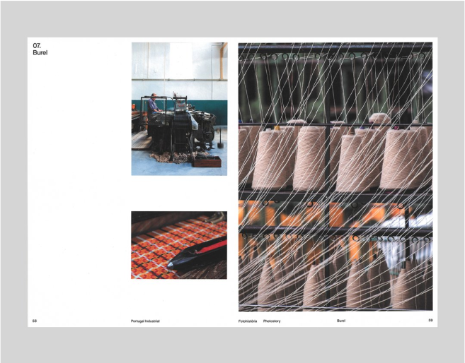
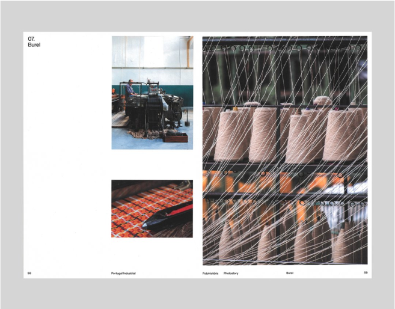

Grid Systems Exercise for the web
Good Design is a matter of Discipline. It Starts by looking at the problem and collecting all the available information about it
Massimo Vigneli
A Grid is like Underware, you wear it but it’s not to be exposed.

 
